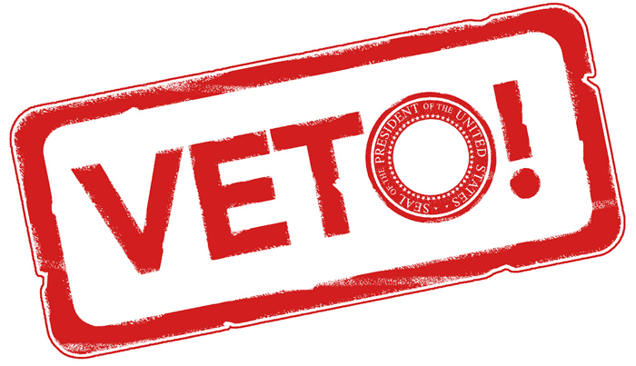

If the President decides a bill is unwise or unnecessary, the President does not sign the bill, but issues an official statement of objections to the bill called a veto. When the President issues a veto, the bill returns to its House of origin.Objections to the veto are read and debated on the House Floor. If there are enough objections in the House to the presidential veto, a vote is taken to override , or overrule, the veto. If the House does not vote on a veto override, the bill is stalled and does not become a law. If enough members object to the presidential veto, a vote is taken to override, or overrule the veto.A two-thirds vote or greater is needed in both the House and the Senate to override the President's veto. If two-thirds of both houses of Congress vote successfully to override the veto, the bill becomes a law. If the House and Senate do not override the veto, the bill "dies" and does not become a law. We need 2/3 of both houses to override a veto.

Previous Next